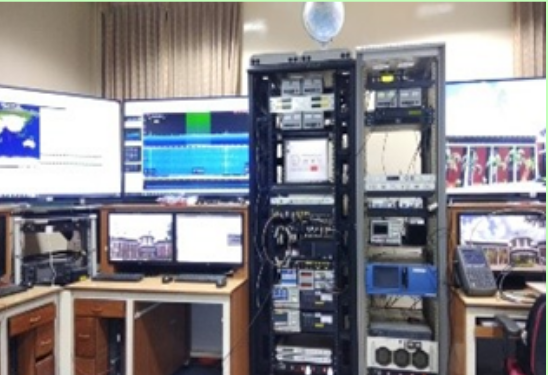
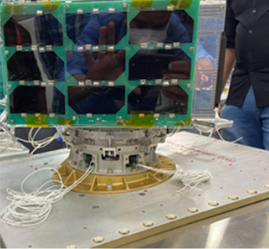
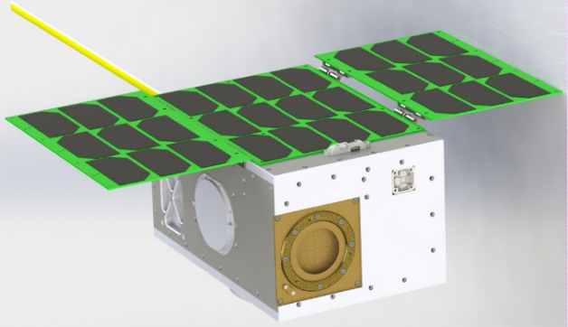

Program management
InspireSat-3
Leading the program: aligning subsystem teams, schedules, reviews and integration milestones to take the satellite from design to launch readiness.
Current role
From the antenna on the ground to the payload in orbit: I've worked across the full chain of a small-satellite mission, and now manage one end to end.

The GRACE team at the pad before PSLV-C60 lifted off in 2024. I was the chief software developer for the mission. GRACE flew on ISRO's PSLV Orbital Experimental Module (POEM).
Four missions, four roles: program management, flight software, payload team and ground operations.
Leading the program: aligning subsystem teams, schedules, reviews and integration milestones to take the satellite from design to launch readiness.

Led the flight software for GRACE, from architecture through testing to launch on ISRO's PSLV Orbital Experimental Module.

Part of the team behind IIST's student technology-demonstration payload. It flew a 3D-printed metal structure, an in-house on-board computer and flight software, and RS485 telemetry to the POEM.

Managed the IIST ground station for InspireSat-1: tracking passes, commanding, and receiving telemetry over VHF, UHF and S-band. The satellite was built with LASP, NCU and NTU, and kept operating long past its 6-month design life.


